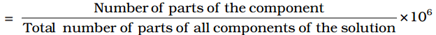
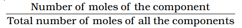
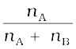
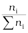

Composition of a solution can be described by expressing its concentration. The latter can be expressed either qualitatively or quantitatively. For example, qualitatively we can say that the solution is dilute (i.e., relatively very small quantity of solute) or it is concentrated (i.e., relatively very large quantity of solute). But in real life these kinds of description can add to lot of confusion and thus the need for a quantitative description of the solution.
There are several ways by which we can describe the concentration of the solution quantitatively.
(i) Mass percentage (w/w): The mass percentage of a component of a solution is defined as:
Mass % of a component
=
For example, if a solution is described by 10% glucose in water by mass, it means that 10 g of glucose is dissolved in 90 g of water resulting in a 100 g solution. Concentration described by mass percentage is commonly used in industrial chemical applications. For example, commercial bleaching solution contains 3.62 mass percentage of sodium hypochlorite in water.
(ii) Volume percentage (v/v): The volume percentage is defined as:
Volume % of a component =
For example, 10% ethanol solution in water means that 10 ml of ethanol is dissolved in water such that the total volume of the solution is 100 ml. Solutions coxntaining liquids are commonly expressed in this unit. For example, a 35% (v/v) solution of ethylene glycol, an antifreeze, is used in cars for cooling the engine. At this concentration the antifreeze lowers the freezing point of water to 255.4K (–17.6°C).
(iii) Mass by volume percentage (w/v): Another unit which is commonly used in medicine and pharmacy is mass by volume percentage. It is the mass of solute dissolved in 100 ml of the solution.
(iv) Parts per million: When a solute is present in trace quantities, it is convenient to express concentration in parts per million (ppm) and is defined as:
Parts per million

As in the case of percentage, concentration in parts per million can also be expressed as mass to mass, volume to volume and mass to volume. A litre of sea water (which weighs 1030 g) contains about 6 × 10–3 g of dissolved oxygen (O2). Such a small concentration is also expressed as 5.8 g per 106 g (5.8 ppm) of sea water. The concentration of pollutants in water or atmosphere is often expressed in terms of µg mL–1 or ppm.
(v) Mole fraction: Commonly used symbol for mole fraction is x and subscript used on the right hand side of x denotes the component. It is defined as:
Mole fraction of a component =

For example, in a binary mixture, if the number of moles of A and B are nA and nB respectively, the mole fraction of A will be
xA =
For a solution containing i number of components, we have:
xi = = 
It can be shown that in a given solution sum of all the mole fractions is unity, i.e.
x1 + x2 + .................. + xi = 1
Mole fraction unit is very useful in relating some physical properties of solutions, say vapour pressure with the concentration of the solution and quite useful in describing the calculations involving gas mixtures.
(vi) Molarity: Molarity (M) is defined as number of moles of solute dissolved in one litre (or one cubic decimetre) of solution,
For example, 0.25 mol L–1 (or 0.25 M) solution of NaOH means that 0.25 mol of NaOH has been dissolved in one litre (or one cubic decimetre).
(vii) Molality: Molality (m) is defined as the number of moles of the solute per kilogram (kg) of the solvent and is expressed as:
Molality (m) =
For example, 1.00 mol kg–1 (or 1.00 m) solution of KCl means that 1 mol (74.5 g) of KCl is dissolved in 1 kg of water.
Each method of expressing concentration of the solutions has its own merits and demerits. Mass %, ppm, mole fraction and molality are independent of temperature, whereas molarity is a function of temperature. This is because volume depends on temperature and the mass does not.